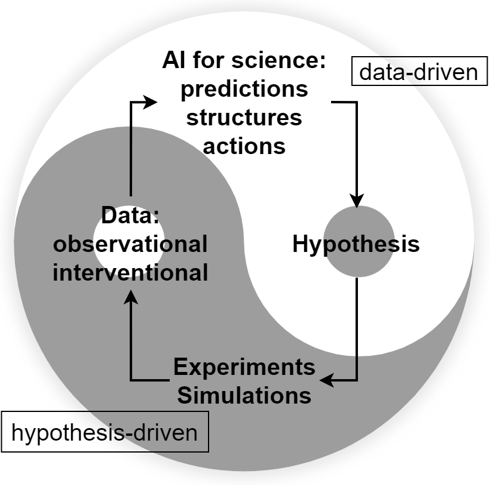
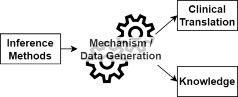

HAOQI SUN
Researcher // AI & Sleep Science
Researcher at Neurology Dept, Beth Israel Deaconess Medical Center (BIDMC) and Harvard Medical School (HMS). Member of Clinical Data Animation Center, directed by Prof. M. Brandon Westover, MD. PhD. You can call me Hugo if you want.
⟁ EMAIL: ude tod dravrah tod cmdib ta 3nush (esrever)
 ORCID: 0000-0002-5041-8312
ORCID: 0000-0002-5041-8312
MODULE 01
RESEARCH PHILOSOPHY

Inspired by Wang et al. Scientific discovery in the age of artificial intelligence. Nature 620.7972 (2023): 47–60. [LINK]
There are many other examples of such iteration:
- Scientific method: induction → abduction → induction → abduction …
- Neuroscience: neural oscillation cycles
- Sleep architecture: NREM → REM → NREM → REM …
- Expectation-maximization: E → M → E → M …
MODULE 02
RESEARCH FRAMEWORK

Use AI to assist research:
- Use AI to extract phenotypes that otherwise cannot be extracted
- Use AI to make decisions that otherwise cannot be done
- Use AI to propose new hypotheses in an optimal way
MODULE 03
RESEARCH DOMAINS
- Sleep Medicine
- Sleep-based biomarkers for brain health and aging
- The role of sleep in neurological diseases
- Causal Inference in Neuroscience and Neurology
- Causal effect estimation
- Mediation analysis to map affecting pathways
I am trained in AI stuff, brain stuff, Bayesian stuff, computational neuroscience, and bioinformatics.
MODULE 04
PUBLICATIONS
Full archive: [ GOOGLE SCHOLAR ]
- Sun, H., Sourina, O. and Huang, G.B., 2016. Learning polychronous neuronal groups using joint weight-delay spike-timing-dependent plasticity. Neural Computation, 28(10), pp.2181–2212.
- Sun, H., Paixao, L., et al., 2019. Brain age from the electroencephalogram of sleep. Neurobiology of Aging, 74, pp.112–120.
- Hogan, J., Sun, H., et al., 2020. Burst suppression: causes and effects on mortality in critical illness. Neurocritical Care, 33, pp.565–574.
- Sun, H., Ganglberger, W., et al., 2020. Sleep staging from electrocardiography and respiration with deep learning. Sleep, 43(7), p.zsz306.
- Sun, H., Ye, E., et al., 2023. The Sleep and Wake Electroencephalogram over the Lifespan. Neurobiology of Aging, 124, pp.60–70.
MODULE 05
SERVICE
- Consultant, AI in Sleep Medicine Committee — American Academy of Sleep Medicine, 2020–2023
MODULE 06
GRANTS
FUNDED
Schilder Family Neuroscience Seed Fund